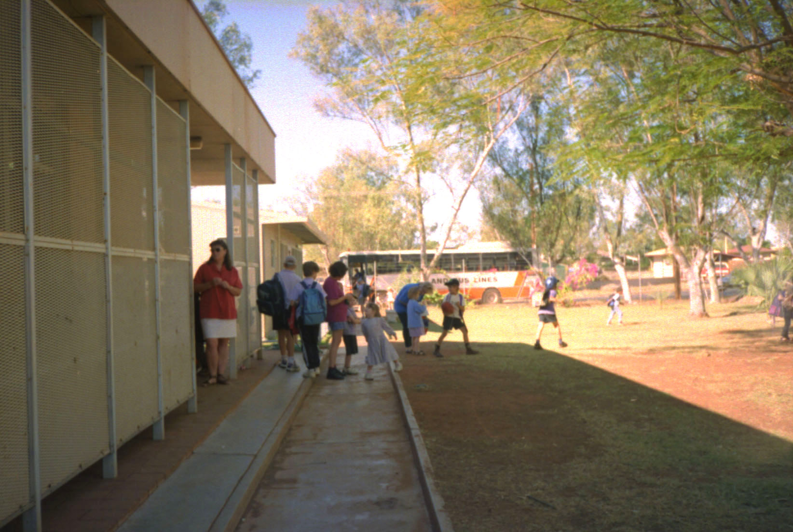

１１８．「オーストラリア小学校状況」
ここに赴任した時、下の子は日本で小学校３年生であった。日本では学校に売店があり、おやつ、パンなどを売って
いるところはない。ここでは多少事情が違い（もしかしたら僻地のみかも）、売店でおやつも売っている。子供は英語
を全く話せない状態である、何にでも良いから興味を持ってくれればと思いおやつを買うようにお小遣いを持たせてい
た。
ある日、アイスクリームを買って食べたと言う。口の中を見たら真っ青である、アイスクリームの着色がどぎついの
であるが、ここオーストラリアでは食用着色料は安全上厳しく制限されているので大丈夫との事であった。
お昼も時々買って食べられるようになった。どうやって買ったのか本人は教えてくれなかった、多分指差したのだろう。
その内に少しずつ英語を覚えたのだろうと思う。
学校の授業は２月から始まり１２月で１年を終了する。３ヶ月毎に２週間の休みが入る、私は毎日お昼を自宅でとって
いたので、この２週間は朝、昼、晩と３食を家族4人揃って食べることができた。また、面白いシステムで、お弁当を忘
れてきた子供には、学校はお弁当を買い与えるようになっている。学校のお昼は何故か生徒にとって酷なシステムである、
日本なら教室でお昼を食べるが、オーストラリア全土の小、中学校ではお昼を外で食べなければならないらしい。寒い地方や、暑い地方ではお
昼を外で食べるのは大変である。何しろ気温は暑い地方で４０数度、寒ければ氷点下になる。それなのに外ですからね、
きついですよ。

年に数回位、晩７時以降に小学校で催し物がある。音楽発表会、ディスコ・ダンス、クリスマス・パーティーなどである。
南半球であるからクリスマスはサマークリスマスになり夜でも気温は３５度を超えている。
ディスコ・ダンスでは小学生が音楽に合わせて思い思いに踊るが、これが様になっている。日本でいえば盆踊りかもし
れない。しかし、小学生が大人顔負けの振り付けで踊るので、子供によってはちょっとませ餓鬼にもみえる。
授業は、子供たちに考えさせることに重点をおいている、しかも楽しみながら学べるように工夫している。歴史の授業
で、古めかしい文書を作成するために、紙にコーヒーと紅茶を染み込ませて古めかしくし、そこに歴史を書き綴っていた。
中学校になると形相は一変し、勉強・勉強になるようでした。でもここの中学生、ほぼ全員は夜の１０時には寝るそうで
す。何とも健康的な生活をしているみたいです。日本の小学生ですら１２時まで起きているらしいのに。
２００１年１１月１６日 記
|